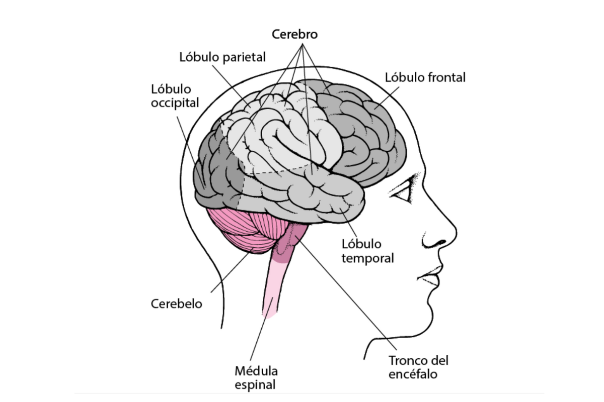

El cerebro humano es el órgano más voluminoso del encéfalo. Ocupa los sectores anterior y medio (superior) de la cavidad craneal. Su componente principal son los hemisferios y la corteza cerebral que recubre su superficie, derivados del prosencéfalo.[1] Los hemisferios del cerebro presentan formaciones más o menos evidentes llamadas lóbulo cerebral. Especialmente amplios son en el humano sus lóbulos frontales, que están asociados con funciones ejecutivas, tales como el autocontrol, la planificación, el razonamiento y el pensamiento abstracto. El cerebro humano se encarga tanto de regular y mantener cada función vital del cuerpo, como de ser el órgano donde reside la mente y la conciencia del individuo. La evolución del cerebro, a través de los primates hasta los homínidos, se caracteriza por un aumento constante en la encefalización, que es la relación del cerebro con el tamaño corporal.[nota 1][nota 2] El humano adulto tiene un volumen cerebral, calculado promedio de 1300 centímetros cúbicos.

Lo más relevante para la transformación del funcionamiento del cerebro, no parece ser el número de neuronas, sino la complejidad que viene dada por las conexiones que se establecen entre las distintas partes del encéfalo.[4] Incluso el cerebro del adulto, es notablemente dinámico, plástico y reconfigurable, hecho que está respaldado por una abrumadora cantidad de evidencia científica.[5][6] El cerebro humano está protegido por los huesos del cráneo, suspendido en líquido cefalorraquídeo, y aislado de la sangre por la barrera hematoencefálica, pero su naturaleza delicada lo hace susceptible a muchos tipos de daños y enfermedades. Las formas más comunes de daño físico son por un traumatismo craneoencefálico, un accidente cerebrovascular, o una intoxicación. El cerebro humano también es susceptible de tener enfermedades degenerativas, como la epilepsia, la enfermedad de Parkinson, la esclerosis múltiple y la enfermedad de Alzheimer. Una serie de trastornos psiquiátricos, como la esquizofrenia, la neurosis o la depresión, son causados en parte por disfunciones cerebrales.
El cerebro humano está formado por las estructuras derivadas del Telencéfalo y el Diencéfalo, los dos sectores anteriores del Prosencéfalo embrionario.
Ocupa el sector anterior y superior del cráneo llamados fosa craneal anterior y fosa craneal media.[1]
El cerebro de un adulto humano pesa en promedio, alrededor de 1400 gramos (g).[7]
El volumen promedio es de alrededor de 1130 centímetros cúbicos (cm³) en mujeres y 1260 cm³ en hombres, aunque existen variaciones individuales importantes.[8]
Los hombres con igual altura y superficie corporal que las mujeres, tienen en promedio, cerebros 100 gramos más pesados,[9] aunque estas diferencias no se relacionan de ninguna forma con el número de neuronas de la sustancia gris o con las medidas generales del sistema cognitivo.[10]
Pese a ser uno de los órganos más estudiados, se han desarrollado una serie de conceptos erróneos que han llegado a ser asimilados por la sociedad como correctos; como es el caso del mito que dice, que los humanos solamente utilizamos un 10 % del cerebro.[11
Macroarquitectura El cerebro es un órgano de estructura muy compleja. Para su estudio se lo divide en dos sectores grandes llamados hemisferios cerebrales; estos a su vez se dividen en lóbulos cerebrales y los lóbulos son recorridos por surcos y circunvoluciones que pueden ser individualizados.
Hemisferios Los dos hemisferios cerebrales forman la mayor parte del cerebro humano se localizan por encima de las otras estructuras neurales y derivan de las dos vesículas laterales del telencéfalo embrionario. Los hemisferios derecho e izquierdo son aproximadamente simétricos, sin embargo el izquierdo es ligeramente mayor. Están separados por la profunda cisura medial. Están cubiertos por una capa cortical sinuosa, la corteza cerebral, formada por sustancia gris.[12] Encéfalo humano: arriba, el cerebro. Abajo, los componentes principales del tallo encefálico. A la derecha, el cerebelo. Dibujo del encéfalo, mostrando el cerebro arriba (en rosa). Las estructuras que se encuentran por debajo de la corteza (subcorticales) del cerebro humano incluyen el hipocampo, los núcleos basales y el bulbo olfatorio.
Corteza Artículo principal: Neocórtex La corteza cerebral, que es la capa exterior (superficial) de materia gris del cerebro, se presenta como una delgada lámina de pocos milímetros de espesor, que cubre ambos hemisferios cerebrales. Circunvoluciones y surcos mayores en la superficie lateral de la corteza. La corteza cerebral se encuentra plegada, de tal manera que permite que una gran superficie pueda alojarse dentro de los confines del cráneo. Cada hemisferio cerebral humano, tiene una superficie total de alrededor de 1200 centímetros cuadrados (cm²).[13] Cada uno de los pliegues de la corteza se denomina surco, y a la zona lisa y abultada entre los surcos, una circunvolución. La mayoría de los cerebros humanos muestran un patrón similar de plegado, pero hay bastantes variaciones en la forma y el lugar de los pliegues que hacen a cada cerebro único. El patrón es lo suficientemente consistente para que cada pliegue principal reciba un nombre, por ejemplo, la «circunvolución frontal superior», o el «surco poscentral».
Lóbulos Artículo principal: Lóbulo cerebral Los anatomistas dividen por convención cada hemisferio humano en seis lóbulos, el lóbulo frontal, el lóbulo parietal, el lóbulo occipital, el lóbulo temporal, el lóbulo insular y el lóbulo límbico. La única frontera notable entre los lóbulos frontales y parietales está en el surco central, que marca la línea entre la corteza somatosensorial primaria y la corteza motora primaria.
Microarquitectura Se ha estimado que el encéfalo humano contiene 86 000 000 000 (ochenta y seis mil millones 8,6 × 10 10) de neuronas,[2] de las cuales cerca de 10 000 000 000 (diez mil millones, 1 × 10 10) son células piramidales corticales. Estas células transmiten las señales a través de mil billones (1015)

Normalmente, el metabolismo del cerebro es completamente dependiente de la glucosa de la sangre como fuente de energía, ya que los ácidos grasos no atraviesan la barrera hematoencefálica.[30] Durante momentos de baja glucosa (como el ayuno), el cerebro utilizará principalmente los cuerpos cetónicos como combustible con un menor requerimiento de glucosa. El cerebro no almacena la glucosa en forma de glucógeno, a diferencia de, por ejemplo, el músculo esquelético. Aunque el cerebro humano representa tan solo el 2 % del peso corporal, recibe el 15 % del gasto cardíaco y el 20 % del consumo total de oxígeno del cuerpo, y usa el 25 % de la glucosa total del cuerpo.[31] La necesidad de limitar el peso corporal con el fin, por ejemplo, de volar, ha llevado a la reducción del tamaño del cerebro en algunas especies, como los murciélagos.[32] El consumo de energía del cerebro no varía en demasía con el tiempo, pero las regiones activas de la corteza consumen más energía que las regiones inactivas: este hecho forma la base de los métodos de imagen cerebral funcional por PET y fMRI.[33] Estos son técnicas de imagen de medicina nuclear que producen una imagen tridimensional de la actividad metabólica.
Principal